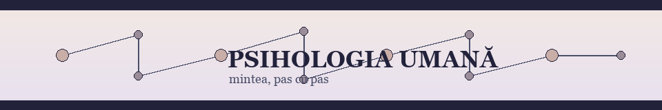
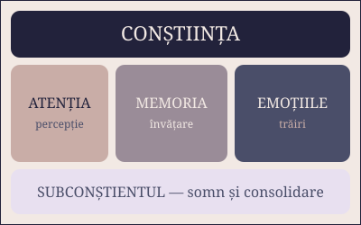

Înțelegerea minții și a comportamentului — de la percepție la emoții, de la memorie la somn.

Fig. 1 — Mintea ca rețea: fiecare nod este un proces psihic, fiecare linie o legătură.
Ce este psihologia?
Psihologia este studiul științific al minții și al comportamentului. Spre deosebire
de bunul sim, psihologia își verifică afirmațiile prin experimente repetate —
la fel ca în orice știință. Dacă vrei parcurgerea completă, urmează Ghidul,
apoi relaxează-te cu secțiunea multimedia și încheie cu
chestionarul.
Cum citim o afirmație psihologică? În nota de laborator M = 75, σ = 12,
media spune unde se strâng scorurile, iar abaterea standard cât de mult se răspândesc.
Afirmația folosim doar 10% din creier este un mit foarte răspândit —
imaginile medicale arată activitate în toate zonele creierului, nu doar într-un fragment.
Termeni de bază, pe scurt
Ca într-un dicționar de buzunar — termenul aldin, definiția alături.
Peste tot în site, notația superscript indică sursele:1
psihologie
studiul științific al minții și al comportamentului;
cogniție
totalitatea proceselor prin care achiziționăm și prelucrăm informația;
totalitatea reacțiilor observabile ale unei persoane;
psihic
funcția superioară de reflectare a realității, particulară omului.
Notă: definițiile sunt simplificate în scop didactic. Formula completă a retenției:
R(t) = e-t/s, unde t = timpul, s = stabilitatea amintirii.
Ce vei afla din acest site
Temele site-ului
Procese cognitive
percepția și atenția;
memoria și uitarea.
Stări și trăiri
emoții de bază;
stres și adaptare;
somn și consolidare.
tipare de personalitate;
mituri și dovezi;
metode de autoobservare.
Obiectivele, în ordine
să identifici procesele psihice în viața de zi cu zi;
să diferențiezi emoția de dispoziție și de temperament;
să aplici exercițiul de atenție și respirația 4-7-8;
să recunoști miturile populare despre creier;
să îți organizezi somnul pentru o memorie mai bună.
Cum poți învăța eficient
citește o secțiune pe zi;
repeta maine ce ai citit azi;
explică cuiva, în cuvintele tale.
RECOMANDARE: PARCURGE PAGINILE ÎN ORDINEA MENIULUI.
Pașii de autoobservare, rezumați:
observă starea;
noteaz-o;
revino peste o zi.
Iar scalele clasice de evaluare:
niciodată;
uneori;
des;
întotdeauna.
Capitolele mari ale ghidului, în cifre romane mari:
percepția și atenția;
memoria și uitarea;
emoțiile și stresul;
somnul și consolidarea.
Personalitatea: modelul Big Five
Personalitatea se observă în tipare repetate de gândire, trăire și acțiune.
Sau, cum spunea Carl Rogers: Curajul de a fi tu însuți este începutul oricărei schimbări.
Cele cinci dimensiuni ale personalității — tabel 1
Trăsătura
Scor mic
Scor mediu
Scor mare
Deschidere
concret
curios, organizat — echilibrul tipic
imaginativ
Conștiințiozitate
spontan
metodic
Extraversie
rezervat
sociabil
expresiv
Agreabilitate
critic
cooperant
compătimitor
Stabilitate emoțională
reactiv
echilibrat
calm
Scorurile descriu tendințe, nu destine: contextul și efortul schimbă comportamentul.
Harta psihicului
Diagrama de mai jos este clicabilă: fiecare zonă te duce la capitolul ei din
pagina Ghid. Harta e desenată cu imagini clicabile (usemap).

Fig. 2 — Fă clic pe o zonă pentru a ajunge la capitolul ei.
Mică provocare
Dacă ai putea observa un singur proces psihic timp de o zi — memoria, atenția sau emoțiile —
pe care l-ai alege? Scrie două propoziții despre alegerea ta în
chestionarul de autoevaluare.
Definiții suplimentare găsești pe Wikipedia — Psihologie.